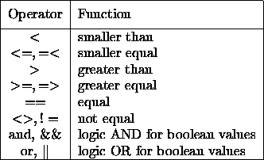

So far the user is able to generate expressions and to assign a value to a variable. In order to display values, the print function is used. The print function is a real function call of the batch interpreter and displays all values on the standard output if no input file is declared. Otherwise all output is redirected into a file. The print function can be called with multiple arguments. If the function is called without any arguments a new line will be produced. All print commands are automatically terminated with a newline.

If a variable, which has not been assigned a value yet, is tried to be printed, the print function will display < > undef instead of a value.